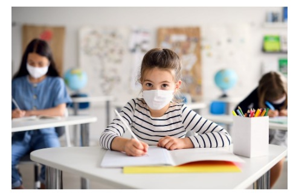

Estamos cada vez mais perto de acabar as aulas. E agora com o fim tão próximo, os alunos estão focando cada vez mais em suas notas finais, com medo de reprovarem, já outros param de fazer as coisas por já terem passado.
Muitos alunos não têm se dedicado muito às aulas on-lines, não fazendo as atividades, nem ao menos assistindo às aulas, mas o final do ano já está chegando e muitos alunos se preocuparam apenas agora em recuperar a nota. Já outro caso é dos alunos que tiveram uma grande performance nas notas, e muitas das vezes nem foram de forma honesta, assim já passando antes do final do ano, assim achando que sua obrigação de aluno acabou deixando de fazer tudo, e não se preocupando mais com deveres e atividades.

Mas com a porcentagem de vacinação aumentando, os comércios reabrindo, consequentemente as aulas presenciais voltando, esperamos que ano que vem as aulas estejam totalmente presenciais, então se preocupe em ser um bom aluno todo o ano e não deixe de fazer suas atividades até o último dia de aula.